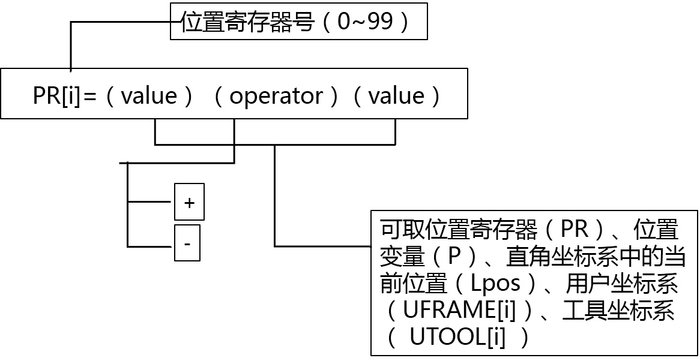

4.2喷漆示教编程
4.2.5位置寄存器指令PR
位置寄存器是一个存储位置数据(x、y、z、w、p、r)的变量，本系统提供100个位置寄存器
指令格式：PR[i]=(value)
指令注释：把数值(value)赋值给指定的位置寄存器。位置寄存器指令在位置寄存器上完成算术操作。位置寄存器指令可以把位置数据、两个数值的和、差赋值给指定的位置寄存器。
指令说明：
PR——位置寄存器
[i]——位置寄存器号，取值范围为0-99
Value——可以取位置寄存器（PR）、位置变量（P）、直角坐标系中的当前位置（Lpos)、关节坐标系中的当前位置（Jpos）、用户坐标系（UFRAME[i]）、工具坐标系（UTOOL[i]）。
(1)PR[i]=(value)
指令把数值(value)赋值给指定的位置寄存器。
(2)PR[i]=(value)+(value)
指令把两个数值的和赋值给指定的位置寄存器。
(3)PR[i]=(value)-(value)
指令把两个数值的差赋值给指定的位置寄存器。
指令结构如下：
示例：
1: PR[1] = Lpos
2: PR[R[4]] = UFRAME[R[1]]
3: PR[9] = UTOOL[1]
4: PR[3] = PR[4]+Lpos
5: PR[4] = PR[R[1]]